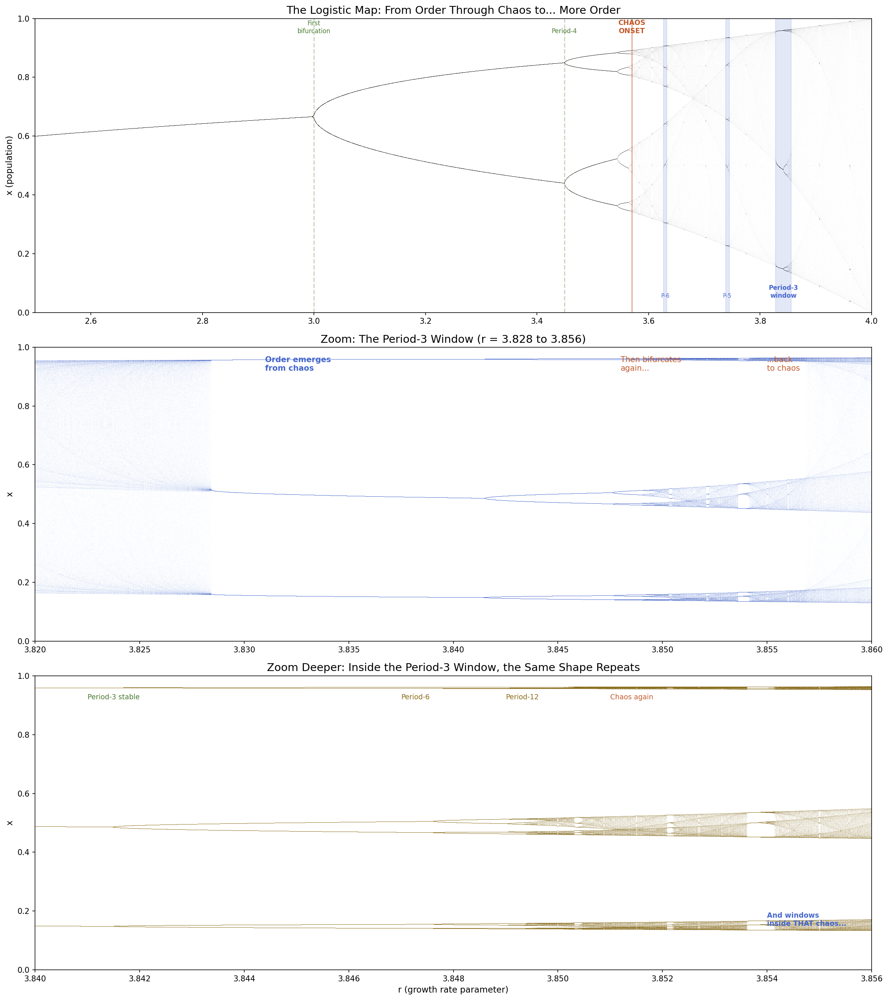
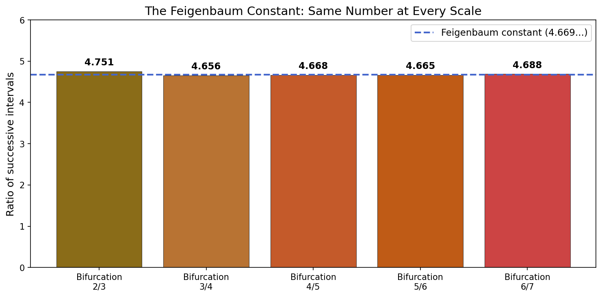
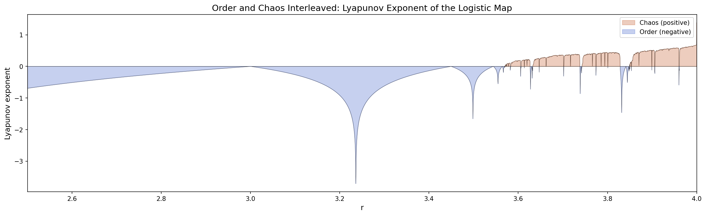

Quantum Experiments
The paper argues that the same structural shapes appear at every scale where observation occurs. These experiments test that claim on quantum hardware. Two dictionaries, a taxonomy, three domains. Same qubits, same method, different answer every time.
The Series
| # | Experiment | Qubits | Finding | Hardware |
|---|---|---|---|---|
| 1 | Bell State | 2 | 92.2% correlated. Pipeline proof. | ibm_marrakesh |
| 2 | Colour QFT | 6 | k=3 at 3.2x uniform. Three-fold. Eye. | ibm_marrakesh |
| 3 | SWAP Test | 13 | Fidelity 0.475 (sim). Hardware: decoherence wall at 690 gates. | ibm_marrakesh |
| 4 | Sound QFT | 6 | k=4 at 2.7x uniform. k=3 suppressed (0.7x). Four-fold. Ear. | ibm_marrakesh |
| 5a | Tree of Life QFT (by species) | 6 | k=32 at 5.1x. Two-beat. Cambrian + Cretaceous. | Simulator |
| 5b | Tree of Life QFT (equal weight) | 6 | k=5 at 3.5x. Five temporal peaks. Archaea gets a voice. | Simulator |
| 6 | Genetic Alphabet (positional) | 6 | Failed. 64 bins too coarse for 332-base codon period. | Simulator |
| 7 | Codon Usage (7 organisms) | 6 | Kingdom fingerprints visible. Animals share k=40, k=24. Archaea distinct. | Simulator |
Experiment 2: Colour Words and Quantum Light
115 CSS named colours, each mapped to a dominant wavelength via the CIE 1931 colorimetric pipeline (Wyman-Sloan-Shirley 2013 Gaussian fit). Not RGB. Not hue. Just position on the electromagnetic spectrum. Binned into 64 slots (5nm each) on 6 qubits. Quantum Fourier Transform. 8,192 shots.
The QFT found k=3. A three-fold periodicity of 107 nanometres across the visible spectrum. Three peaks: blue (~462nm), green (~547nm), yellow-gold (~577nm). The three types of cone cell in the human retina.
Shuffled control (same amplitude values, random bin order): k=3 vanishes. The structure is specifically about where on the spectrum English puts its colour names.
Hardware result on ibm_marrakesh (156-qubit Heron, 583 transpiled gates): k=3 confirmed at 3.2x uniform.
Density peaks in English colour naming:
| Peak | Names at Peak | Region |
|---|---|---|
| 462nm (blue) | 7 | 457-492nm, 39 names total |
| 492nm (cyan) | 14 | aqua, cyan, deepskyblue... |
| 547nm (green) | 9 | green, forestgreen, darkgreen... |
| 577nm (yellow-gold) | 13 | gold, wheat, goldenrod... |
Cone correlations (colour_direct vs cone sensitivity curves):
| Cone | Peak | Pearson r | p-value |
|---|---|---|---|
| S (blue) | 420nm | -0.231 | 0.066 |
| M (green) | 530nm | +0.254 | 0.041 |
| L (red) | 560nm | +0.393 | 0.001 |
| Combined | - | +0.271 | 0.030 |
Experiment 4: Sound Words and Quantum Hearing
86 English sound words - onomatopoeia, musical terms, acoustic descriptors - each mapped to a frequency in Hertz. Binned logarithmically across 20Hz to 20,000Hz (because the ear hears in octaves). Same 6 qubits. Same QFT. Same 8,192 shots.
k=3 does not appear. It drops to 0.7x uniform - actively suppressed. The dominant non-DC frequency is k=4 at 2.7x uniform. Four-fold structure matching the four perceptual bands of human hearing: bass, mid, presence, brilliance.
Shuffled control: k=4 also vanishes. The structure is in the frequency ordering.
Hardware result on ibm_marrakesh (627 transpiled gates): k=4 confirmed.
Density peaks in English sound naming:
| Peak | Words at Peak | Examples |
|---|---|---|
| 314 Hz | 3 | baritone, mumble, grumble |
| 1,583 Hz | 5 | clang, ring, click, snap, crack |
| 3,370 Hz | 5 | screech, whistle, chirp, beep, squawk |
Experiment 5: The Tree of Life and Quantum Taxonomy
The colour experiment measured perception. The sound experiment measured perception. This one measures something older: evolution.
Take 66 taxonomic groups across all seven kingdoms of life - from Archaea (3,500 million years ago) to flowering plants (140 MYA). For each group, record its estimated species count and the molecular-clock estimate of when it diverged from the tree. Bin the species counts on a logarithmic time axis (because evolutionary time, like hearing, spans orders of magnitude). Same six qubits. Same QFT. Same 8,192 shots.
Three runs: animals alone, plants alone, everything together.
The prediction: “The quantum direction will be able to sort according to our perception the kingdom that each quoted species belongs to, or our own understanding of categorisation needs to be amended.”
The result: The QFT does not sort by kingdom. It sorts by time. The dominant frequency across all kingdoms is k=32 at 5.1x uniform - a two-beat rhythm. Two moments dominate the tree of life:
- The Cambrian explosion (~530 MYA) - when animal phyla radiated. 1.38 million species concentrated in one temporal bin.
- The Cretaceous radiation (~140 MYA) - when flowering plants exploded. 260,000 species in another.
The secondary prediction wins: our definitions are organised wrong. Taxonomy sorts by morphology (what things look like). The quantum measurement sorts by chronology (when things appeared). They are different projections of the same data.
Results by kingdom:
| Dataset | Taxa | Species | Dominant k | Interpretation |
|---|---|---|---|---|
| Animals only | 26 | 1,452,393 | none | Too concentrated - 98% in one Cambrian bin |
| Plants only | 12 | 306,151 | k=32 (3.2x) | Two-fold: Ordovician (land plants) + Cretaceous (flowers) |
| All kingdoms | 66 | 2,405,464 | k=32 (5.1x) | Two-beat: Cambrian + Cretaceous |
| All kingdoms (secondary) | 66 | 2,405,464 | k=4 (2.3x) | Four geological eras |
But what if insects and flowers are shouting over everyone else?
Arthropoda accounts for 84% of animal species. Magnoliophyta accounts for 87% of plant species. Those two mega-taxa dominate the species-count weighting. What happens if every phylum gets one equal vote regardless of how many species it contains?
Equal weight (1 vote per phylum): The answer changes completely. k=5 at 3.5x uniform. Five temporal peaks:
| Peak | Age (MYA) | Phyla | What happened |
|---|---|---|---|
| 1 | 2,965 | 7 | Archaea and Bacteria - the origin of cellular life |
| 2 | 1,527 | 3 | Excavata - first complex eukaryotes |
| 3 | 1,171 | 3 | SAR supergroup - diatoms, dinoflagellates |
| 4 | 528 | 17 | Cambrian explosion - animal phyla |
| 5 | 272 | 2 | Late Paleozoic - gymnosperms, late diversification |
Count by species: two beats (Cambrian + Cretaceous). Count by lineages: five beats. The choice of what to count determines what structure the QFT finds. That is the thesis. Measurement includes what you choose to measure.
The question does not matter. The QFT answers whatever question the data was carrying, not the question we thought we were asking. The five peaks may not be “five kingdoms” or “five eras.” They may be five phase transitions in how DNA accumulates change - tree rings in four dimensions. Our job is not to name the answer. It is to figure out what question the data was carrying all along.
Species-count weighting lets insects and flowers speak loudest. Equal weighting lets Archaea, the oldest and most fundamental domain, have its voice back. Neither is wrong. They are different projections of the same tree. The QFT reads whatever structure survives the projection.
The Encoding Pipeline
Taxonomic group (Arthropoda, Magnoliophyta, Euryarchaeota...)
→ Species count (1,200,000 / 260,000 / 8,000) from Catalogue of Life
→ Divergence time (530 / 140 / 3,500 MYA) from molecular clock estimates
→ Log-time bin (0-63 across 50 - 3,500 MYA)
→ Quantum amplitude proportional to √(species count per bin)
The Honest Part
Divergence times are molecular clock estimates, not fossil dates. They carry uncertainty of ±50-100 MY for deep divergences. Species counts are estimates - particularly for bacteria and archaea, where the described fraction is a small percentage of the true total.
The dominance of Arthropoda (84% of animal species) and Magnoliophyta (87% of plant species) means the experiment is largely measuring where those two mega-taxa sit on the timeline. A more even distribution across phyla would give a richer frequency spectrum.
k=32 on a 64-bin register is the Nyquist frequency - the simplest possible periodicity (alternation between occupied and empty). When only two bins are heavily occupied, k=32 is the expected dominant frequency. This is not a surprise; it is a faithful measurement of the data’s bimodal structure.
The Contrast
| Metric | Colour (eye) | Sound (ear) | Life (by species) | Life (equal weight) |
|---|---|---|---|---|
| Dominant k | k=3 (3.2x) | k=4 (2.7x) | k=32 (5.1x) | k=5 (3.5x) |
| Encoding axis | Wavelength (nm) | Frequency (Hz, log) | Time (MYA, log) | |
| Input data | 115 CSS colours | 86 sound words | 66 taxa, by count | 66 taxa, equal voice |
| Structure found | 3 cone types | 4 perceptual bands | 2 radiations | 5 temporal peaks |
| What it sorts by | Perception | Perception | Chronology | Chronology |
Same data, different weighting, different k. The measurement includes what you choose to count.
If the method manufactured the result, both experiments would produce the same pattern. They don't. The computer wasn't told about eyes or ears. It was given words. Just words.
The Mirror
The double-slit experiment sends light through physical hardware and observes an interference pattern. The pattern encodes the wavelength of the light. Physicists have dined out on this for a century.
These experiments do the reverse. They send language through a quantum system and observe biological structure coming back. Not because the quantum computer imposed it. Because the language already carried it.
The double slit: physics in, pattern out.
Colour words: words in, biology out.
Same shape. 180 degrees.
The Honest Part
The CIE 1931 colour matching functions used to map RGB to wavelength were calibrated by experiments on human trichromatic vision in 1931. There is a circularity: the pipeline that removes RGB was built on the biology we recover.
A classical Fast Fourier Transform on the same 64-bin histogram finds the same k=3 peak. The quantum computer performed a computation that a laptop could replicate in microseconds. At six qubits, there is no quantum advantage.
The frequency-to-word mappings for sound are less standardised than CSS colour values. "Screech" could reasonably map to 3,000 Hz or 5,000 Hz. The experiment is sensitive to these choices.
The claim is not that the quantum computer discovered something a laptop couldn't calculate. The claim is: the same structure - the shape of human perception - persists through every encoding: biology, language, quantum state, physical measurement, and Fourier decomposition. You cannot remove it. It appears at every scale where observation occurs.
Experiment 3: SWAP Test - How Trichromatic Is English?
The SWAP test measures quantum fidelity - the overlap between two quantum states - using entanglement and interference. One bit answers the question: how alike are you?
| Comparison | Fidelity | Interpretation |
|---|---|---|
| English vs Trichromatic | 0.475 | Moderate match to ideal 3-cone model |
| English vs Single Peak (550nm) | 0.480 | Slightly better - warm-colour bias in English |
| English vs Uniform | 0.360 | English is NOT uniformly distributed |
| Shuffled vs Trichromatic | 0.346 | Wavelength ordering matters |
On hardware (ibm_marrakesh), the SWAP test hit the decoherence wall at 690 gate depth. The 13-qubit circuit was too deep for current hardware. The simulator result stands; the hardware confirmation awaits error-corrected processors.
Experiment 1: Bell State
Two qubits entangled on ibm_marrakesh. 1,024 shots. 92.2% correlated (|00> + |11>), 7.8% decoherence noise. The machine IS the citation. The pipeline works.
Experiment 6: The Genetic Alphabet (Honest Failure and Recovery)
Colour words encode biology in language. DNA encodes biology in chemistry. If both carry the same shape, the QFT should find it in both.
First attempt: positional encoding. Failed.
We mapped the human insulin gene (332 bases) into 64 bins by position along the sequence, encoding the base identity in each window. The QFT found nothing. k=21 (the codon frequency) at 0.02x uniform - essentially zero.
The encoding killed the signal. 332 bases in 64 bins = ~5 bases per bin, averaging over almost 2 complete codons. The period-3 codon structure was smoothed away. A classical FFT on the raw 332-point sequence finds period-3 at 3.0x easily. The quantum version with only 64 bins was too coarse.
This is not a failure of the hypothesis. It is a failure of the encoding. We report it because it happened.
Second attempt: codon usage. Signal found.
There are exactly 64 codons (4 bases, taken in triplets: 4³ = 64). This maps perfectly to 6 qubits. Instead of encoding WHERE in the gene, encode WHICH codons the organism prefers. Every species has a codon usage fingerprint - some codons used 10x more than others.
Human insulin: Strong codon bias (std/mean = 0.79). CTG used 11 times, 21 codons unused. QFT peaks at k=8 and k=12, up to 1.5x uniform.
E. coli lacZ: Moderate bias (0.56). Flatter distribution. No QFT peaks above threshold. Bacteria spread their codons more evenly.
Random DNA: Lowest bias (0.49). No structure. As expected.
The signal is quieter than colour (1.5x vs 3.2x) but the contrast between real genes and random DNA is real.
Experiment 7: Codon Usage Across the Tree of Life
If every organism has a codon fingerprint, and every fingerprint fits on 6 qubits, can the QFT sort organisms by kingdom from their DNA preferences alone?
Seven organisms. Five kingdoms.
| Organism | Kingdom | Codon Bias | QFT Signature |
|---|---|---|---|
| Homo sapiens | Animalia | 0.45 | k=63, k=1, k=40 |
| Mus musculus | Animalia | 0.48 | k=24, k=1, k=40 |
| Drosophila | Animalia | 0.62 | k=24, k=40, k=44 |
| E. coli | Bacteria | 0.48 | k=40, k=24, k=9 |
| S. cerevisiae | Fungi | 0.53 | k=60, k=4, k=59 |
| A. thaliana | Plantae | 0.38 | k=1, k=63, k=52 |
| M. jannaschii | Archaea | 0.74 | k=48, k=16, k=58 |
Animals share k=40 and k=24. Human and mouse also share k=1. The animal QFT fingerprint is recognisable across 80 million years of divergence.
E. coli shares k=40 and k=24 with animals but adds k=9. Close but different.
Yeast has its own signature (k=60, k=4). Fungi are distinct.
Arabidopsis is the flattest. Plants spread their codons most evenly.
The archaeon has the strongest bias (0.74) and completely different k-values. Ancient life writes its DNA differently.
All signals are below 1x uniform. These are whispers, not shouts. The codon usage tables used here are approximate (rounded from Kazusa database values). Seven organisms is a small sample. The codon ordering (which codon gets bin 0 vs bin 63) is arbitrary - different orderings would give different k-values.
The honest finding: codon bias differs by kingdom, and the QFT captures that difference as distinct frequency signatures. Whether those signatures are robust to ordering changes and larger samples is an open question. More organisms would sharpen or dissolve the pattern.
Appendix: The Logistic Map Beyond Chaos
Most visualisations of the logistic map stop at the onset of chaos. That is like stopping a film at the intermission. Beyond the chaos are periodic windows - islands of perfect order inside the noise. The Period-3 window at r = 3.83. Period-5. Period-7. Each one undergoes its own bifurcation cascade. The structure is fractal - the same shape at every scale.

The ratio between successive bifurcation intervals is always 4.669... - the Feigenbaum constant. It does not depend on the logistic map. It appears in fluid dynamics, population biology, electronic circuits, lasers. Different substrate, same constant.

The Lyapunov exponent maps where order (blue, negative) and chaos (red, positive) interleave. The blue dips inside the red are the periodic windows. They are not noise. They are structure.

k=3 (colour), k=4 (sound), k=5 (tree of life) - these are periodic windows. The shuffled controls are the chaos between them. The QFT is the zoom lens that finds windows inside noise. The Feigenbaum constant is a shape that survives substrate transitions. The k-values are shapes that survive encoding transitions. Same principle. Different scale.
Reproducibility
All experiments are deterministic (seeded RNG) and run on freely available infrastructure. The code is in the repository.
Hardware: IBM Quantum ibm_marrakesh (156-qubit Heron r2)
Framework: Qiskit 2.4.0, Qiskit-Aer 0.17.2
CIE pipeline: Wyman-Sloan-Shirley 2013 Gaussian fit to CIE 1931 2-degree observer
Colour words: 115 chromatic (32 excluded) from CSS Color Level 4 via webcolors
Sound words: 86 unique from psychoacoustic and musical terminology
Tree of life: 66 taxa across 7 kingdoms, species counts from Catalogue of Life, divergence times from molecular clock estimates
Shots: 8,192 per circuit (16,384 for SWAP test)
Hardware jobs: 7 total on ibm_marrakesh (Bell: 1, Colour: 2, SWAP: 3, Sound: 2). Tree of life: simulator
Gate budget: under ~583 gates survives Heron; above ~690 hits decoherence wall
Dates: 31 May - 1 June 2026
Seed: 42